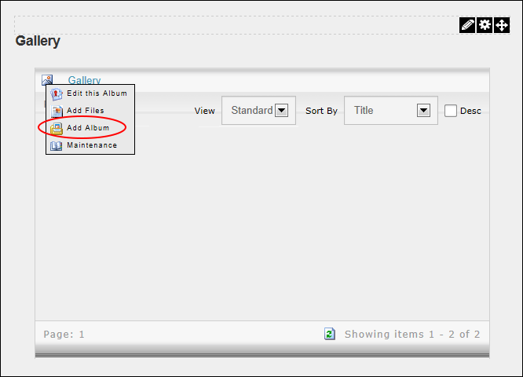
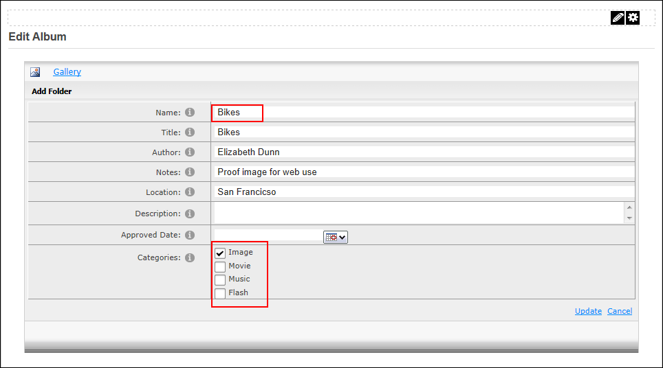
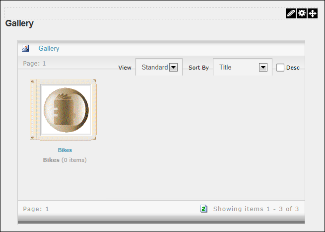

Adding a Parent Album
Module Editors can add a parent album to the gallery module. Note: Album names may not include the following characters that are invalid in either a Windows folder name or web URL: \ / : * ? ! " > < | &
Prerequisite. The maximum height and width of images is set to 500 pixels by default and the maximum height and width of thumbnails is set to 100 pixels by default. Page Editors can only modify these settings prior to adding albums and images to the Gallery. See "Configuring Display Settings"
- Go to the Gallery home page.
- Mouse over the
 Gallery icon and then select
Gallery icon and then select  Add Album. This opens the Edit Album page.
Add Album. This opens the Edit Album page.

- In the Name text box, enter a name for the album using plan text. E.g. Close Ups. Important: The Name field cannot be edited.
- The following settings are optional:
- In the Title text box, enter a title for the album.
- In the Author text box, enter a name for the author of the images.
- In the Notes text box, enter any notes about this gallery.
- In the Location text box, enter the location where the media was taken.
- In the Description text box, enter a description of this gallery.
- At Approved Date, click the Calendar
 button and select the date when the album will be visible to authorized users. See "Working with the Calendar"
button and select the date when the album will be visible to authorized users. See "Working with the Calendar"
- At Categories, select the media categories to be added to this album.

-
Click the Update button.

Adding a Parent Gallery